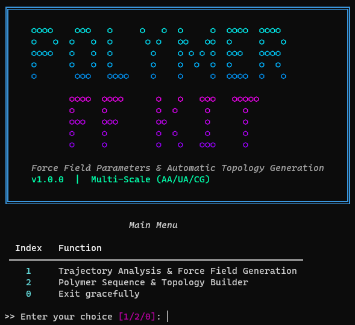
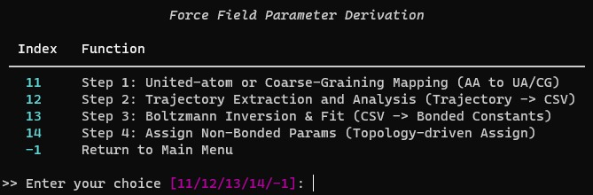
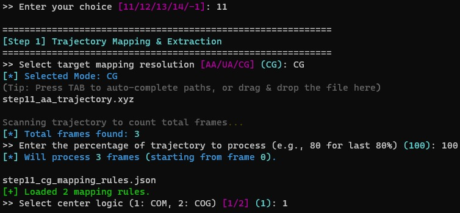
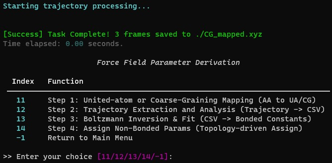
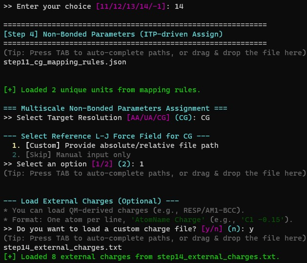
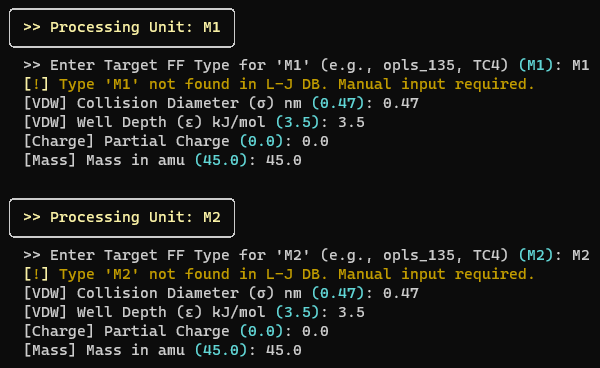
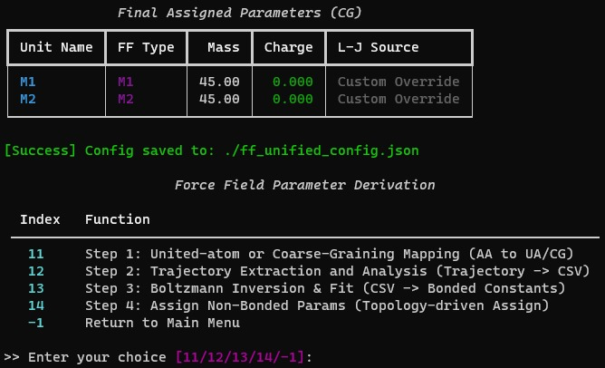
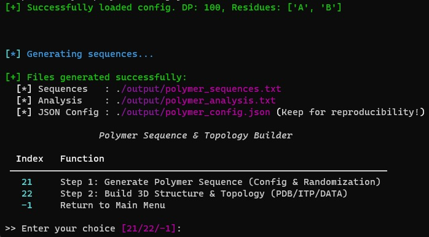
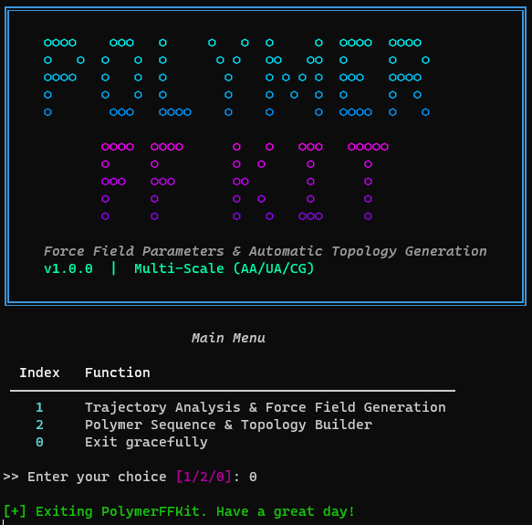

PolymerFFKit 使用截图说明书
1. 引言
1.1 目的
本文档是PolymerFFKit（聚合物力场参数拟合与拓扑构建工具软件）的标准截图说明书。编制本文档旨在通过截图直观展示软件的功能界面和操作流程，以支持软件著作权登记申请。本说明书面向软件著作权审查人员，用于了解软件的功能组成和用户交互方式。
1.2 背景
PolymerFFKit是一款面向聚合物分子动力学模拟的力场参数拟合与拓扑构建工具。软件独立开发，为分子动力学研究人员提供从全原子轨迹到粗粒化力场参数的完整工作流程，涵盖轨迹映射、几何分析、玻尔兹曼反演拟合、非键参数赋值、聚合物序列生成以及三维结构与拓扑构建。
该软件采用基于Python Rich库构建的命令行交互界面（终端用户界面，TUI），提供用户友好的终端菜单导航和交互式输入提示，支持Tab键路径自动补全。
2. 软件概述
2.1 功能特性
PolymerFFKit由以下两大功能模块组成：
- 轨迹分析与力场生成模块：该模块包含四个步骤——分子映射（步骤11，支持AA/UA/CG分辨率）、轨迹几何提取与分析（步骤12，自动识别键长、键角和二面角分布）、玻尔兹曼反演与力场拟合（步骤13，将频率分布转换为势能曲线，支持谐振子/Fourier/RB拟合），以及非键参数赋值（步骤14，交互式分配Lennard-Jones参数和部分电荷）。
- 聚合物序列与拓扑构建模块：该模块包含两个步骤——聚合物序列生成（步骤21，支持精确比例的随机共聚物序列生成）和3D结构与拓扑构建（步骤22，使用NERF算法构建三维原子坐标，并输出PDB、GROMACS ITP/TOP和LAMMPS DATA格式文件）。
软件主菜单界面如图1所示。

2.2 性能
该软件性能稳定，利用向量化数值计算（NumPy）和科学拟合算法（SciPy）高效处理大规模分子动力学轨迹数据。支持多种力场格式输出，满足不同分子动力学模拟软件（GROMACS、LAMMPS）的需求。
3. 运行环境
3.1 硬件要求
CPU：Intel / AMD x86-64架构处理器
内存：16 GB RAM及以上
存储：512 GB SSD及以上
显示器：1920×1080或更高分辨率
3.2 软件要求
操作系统：Windows 10/11、Ubuntu 22.04+、macOS 13+
运行环境：Python 3.10及以上
依赖库：NumPy、SciPy、Pandas、Matplotlib、Rich、prompt_toolkit等
外部软件：GROMACS（可选，用于力场验证）、LAMMPS（可选，用于力场验证）
4. 软件界面截图及说明
本软件采用命令行交互界面（终端用户界面，TUI），所有操作均在终端内完成。以下按模块顺序展示各功能界面的截图及说明。
4.1 程序启动与主菜单界面
程序启动后，终端显示PolymerFFKit的ASCII艺术风格启动横幅，包含青蓝色渐变"POLYMER FF KIT"标志，随后显示版本号（V1.0.0）和多尺度标识（AA/UA/CG）。主菜单提供三个选项：
- 轨迹分析与力场生成（Trajectory Analysis & Force Field Generation）
- 聚合物序列与拓扑构建（Polymer Sequence & Topology Builder）
- 安全退出（Exit gracefully）
用户通过输入数字1、2或0来选择所需功能。主菜单界面如图1所示。此外，用户可随时按Ctrl+C安全中断程序。
4.2 力场参数推导模块
在主菜单中选择"1"后，程序进入力场参数推导子模块。这是PolymerFFKit的核心功能之一，提供从全原子轨迹到力场参数的完整工作流程。
4.2.1 力场参数推导子菜单
此子菜单显示四个步骤选项：
- 步骤11：联合原子或粗粒化映射（AA→UA/CG）
- 步骤12：轨迹提取与分析（轨迹→CSV）
- 步骤13：玻尔兹曼反演与拟合（CSV→键合参数）
- 步骤14：非键参数赋值（拓扑驱动赋值）
- -1：返回主菜单
力场参数推导子菜单界面如图2所示。

4.2.2 步骤11：轨迹映射与提取
此步骤实现分子轨迹分辨率转换，是软件的核心算法之一。操作流程如下：
- 选择目标映射分辨率（AA/UA/CG）
- 输入全原子轨迹文件路径（.xyz格式，支持Tab键自动补全）
- 系统自动扫描并显示轨迹总帧数
- 输入要处理的轨迹百分比（例如，80表示处理后80%的数据）
- UA模式：选择"auto"（自动氢-重原子合并）或"custom"自定义映射规则
- CG模式：提供映射规则JSON文件
- 选择中心计算方法（COM=质心，COG=几何中心）
- 指定输出轨迹文件路径
系统随后开始轨迹处理，每帧输出进度信息。步骤11的操作界面如图3所示。

完成后，系统显示"任务完成"成功信息，包括处理帧数、输出文件路径和总耗时。步骤11的完成界面如图4所示。

4.2.3 步骤12：轨迹几何提取与分析
此步骤从映射后的轨迹文件中自动提取键长、键角和二面角的几何分布数据。操作流程如下：
- 输入映射后的轨迹文件路径（.xyz格式）
- 指定原始分析数据输出文件路径（默认：./raw_analysis.txt）
- 输入键截断距离（BOND_CUTOFF），推荐值：CG为0.8 nm，AA为0.2 nm
系统随后扫描并分析所有帧：使用基于距离截断的邻接矩阵自动识别化学键连接关系，穷举计算每帧的所有键长、键角和二面角。每100帧报告一次进度。步骤12的操作界面如图5所示。

处理完成后，系统显示识别到的几何类型统计信息（键类型数、角类型数、二面角类型数），并输出原始分析数据文件，保存每种键/角/二面角类型的所有实测值。步骤12的完成界面如图6所示。

4.2.4 步骤13：玻尔兹曼反演与力场拟合
此步骤将步骤12提取的几何分布数据通过玻尔兹曼反演转换为平均力势（PMF），并进行力场函数拟合。操作流程如下：
- 输入步骤12的原始分析数据文件（CSV或文本格式）
- 指定输出目录（默认：./fit_results）
- 设置键拟合参数：温度（默认300 K）和PMF阈值百分比（默认50%）
- 设置角拟合参数：温度（默认300 K）和PMF阈值百分比（默认50%）
- 选择二面角拟合类型：0=跳过，1=周期Fourier级数（1-4阶），2=Ryckaert-Bellemans函数
- 选择是否生成PMF拟合图（默认：是）
步骤13的操作界面如图7所示。

系统依次对每种几何类型执行PMF计算、噪声过滤和曲线拟合。拟合结果保存为文本报告文件（forcefield_params.txt），包含键和角的平衡值（x₀）与力常数（k），以及二面角的各阶参数。如启用绘图，每个拟合项生成一张PNG格式的拟合曲线图。步骤13的完成界面如图8所示。

4.2.5 步骤14：非键参数赋值
此步骤将拟合得到的键合参数与力场库中的非键参数（Lennard-Jones参数和部分电荷）整合为统一的力场配置文件。操作流程如下：
- 输入映射规则JSON文件路径（来自步骤11）
- 输入拟合参数TXT文件路径（来自步骤13）
- 指定输出统一配置JSON文件路径
- 选择目标分辨率（AA/UA/CG）
- 选择参考L-J力场库：可从内置库中选取（如Martini 3.0），或提供自定义ITP文件，或跳过仅手动输入
- 可选：加载外部电荷文件（如RESP/AM1-BCC计算的部分电荷）
步骤14的操作界面如图9所示。

随后程序进入交互式珠子参数赋值阶段。系统逐一显示待赋值的各珠子名称，用户指定力场类型后，系统自动从ITP数据库中检索对应的L-J参数（sigma、epsilon）和质量。若数据库中未找到该类型，则进入手动输入模式。用户可确认或编辑电荷值，并设置各珠子的质量。步骤14的珠子参数赋值界面如图10所示。

所有珠子赋值完成后，系统显示最终赋值参数汇总表（包括珠子名称、力场类型、质量、电荷和L-J来源），并将完整配置导出为统一力场配置JSON文件（ff_unified_config.json），供后续拓扑构建步骤使用。步骤14的完成界面如图11所示。

4.3 聚合物序列与拓扑构建模块
在主菜单中选择"2"后，程序进入聚合物序列与拓扑构建模块。该模块提供从序列设计到三维结构构建的完整工作流程。
4.3.1 构建器子菜单
此子菜单显示两个步骤选项：
- 步骤21：生成聚合物序列（配置与随机化）
- 步骤22：构建3D结构与拓扑（PDB/ITP/DATA）
- -1：返回主菜单
构建器子菜单界面如图12所示。

4.3.2 步骤21：聚合物序列生成
此步骤根据用户指定的单体类型、比例和聚合度生成随机共聚物序列。操作流程如下：
- 可选择从已有的JSON配置文件加载参数，或手动输入
- 手动模式：输入重复单元名称（逗号分隔，如：C, T, V）
- 输入各单元对应的比例（如：5.5, 0.5, 4.0）
- 输入总聚合度（DP，默认：100）
- 输入要生成的序列数量（默认：3）
- 选择是否使用严格模式以确保精确的单体比例
- 指定输出文件前缀
步骤21的操作界面如图13所示。

生成完成后，系统输出三个文件：（1）FASTA格式序列文件（_sequences.txt）；（2）序列组成分析文件（_analysis.txt，包含每条序列中每种单体的实际百分比）；（3）JSON配置文件（_config.json，保存参数以便复现）。步骤21的完成界面如图14所示。

4.3.3 步骤22：3D结构与拓扑构建
此步骤是PolymerFFKit的核心功能之一，将一维聚合物序列转换为三维原子坐标，并生成多种分子动力学软件包可用的拓扑文件。操作流程如下：
- 输入步骤21生成的序列文件路径（.txt格式）
- 输入统一力场配置JSON文件路径（来自步骤14）
- 输入非键参数库ITP文件路径（如Martini力场库）
- 指定输出目录（默认：./topology_out）
- 输入分子数量（用于GROMACS .top文件）
步骤22的操作界面如图15所示。

加载配置后，系统使用NERF（最近邻效应解析函数）算法从一维序列构建完整的三维原子坐标：首原子置于原点，第二原子沿X轴放置，后续原子根据键长、键角和二面角参数逐步定位。主链原子线性排列，支链原子遵循支链定义和二面角偏移规则。对每条序列，系统生成：PDB文件（CHAIN_N.pdb，含CONECT键连接记录）、LAMMPS数据文件（CHAIN_N.data，包含Masses、Bond Coeffs、Angle Coeffs、Atoms、Bonds和Angles部分）以及合并的GROMACS ITP/TOP文件。步骤22的处理与完成界面如图16所示。

4.4 程序退出界面
在主菜单中选择"0"后，程序显示退出信息"Exiting PolymerFFKit. Have a great day!"（正在退出PolymerFFKit，祝您愉快！）并正常终止。用户也可随时按Ctrl+C中断程序，程序将显示"Program interrupted by user. Exiting..."（用户中断程序，正在退出...）后安全退出。程序退出界面如图17所示。
